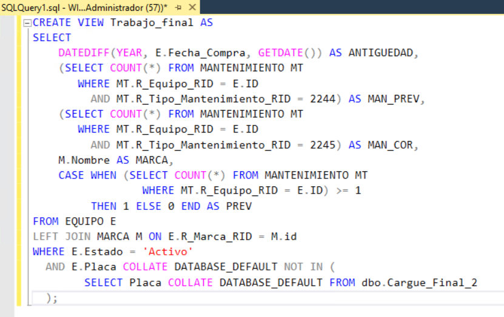
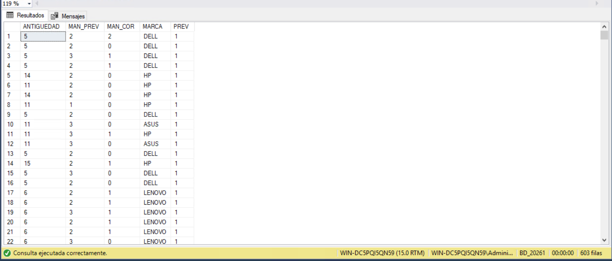
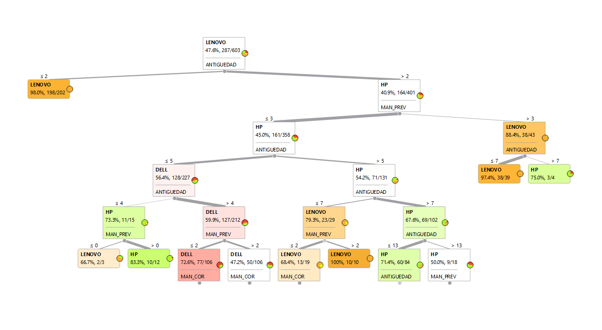
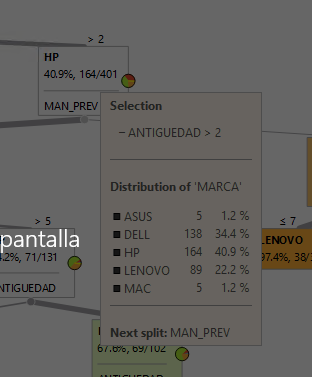
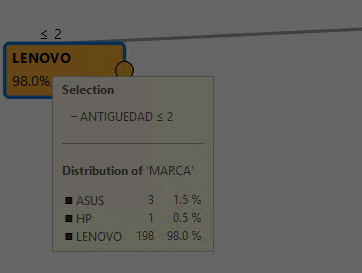
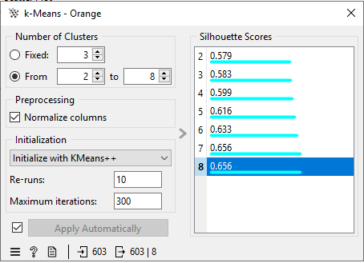
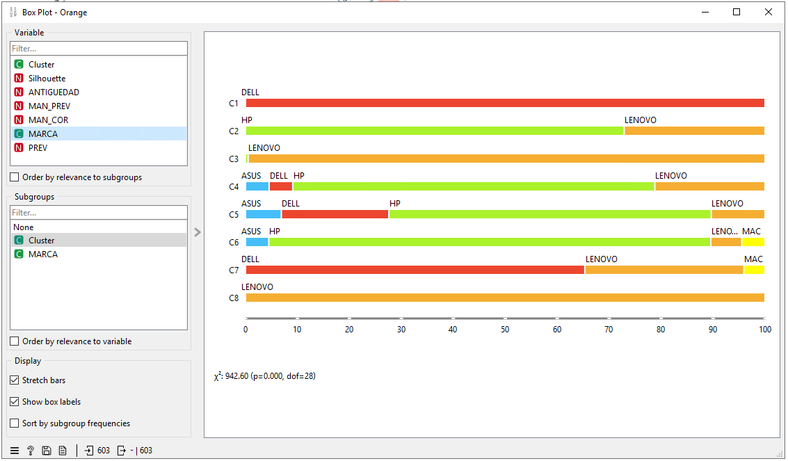
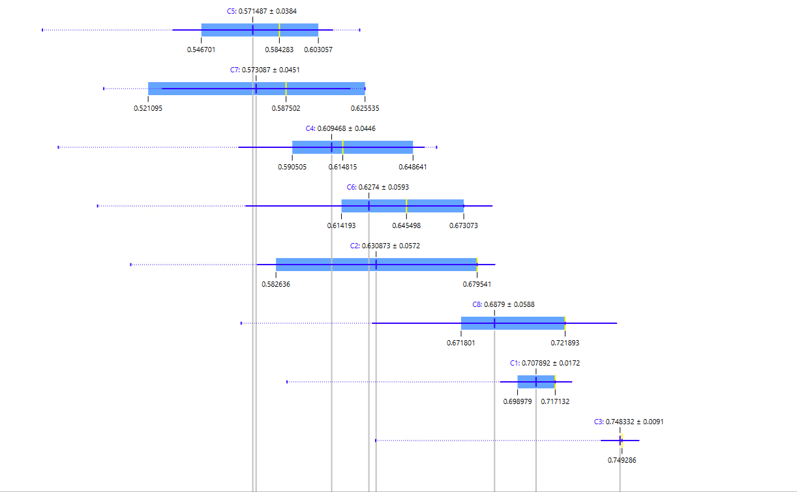
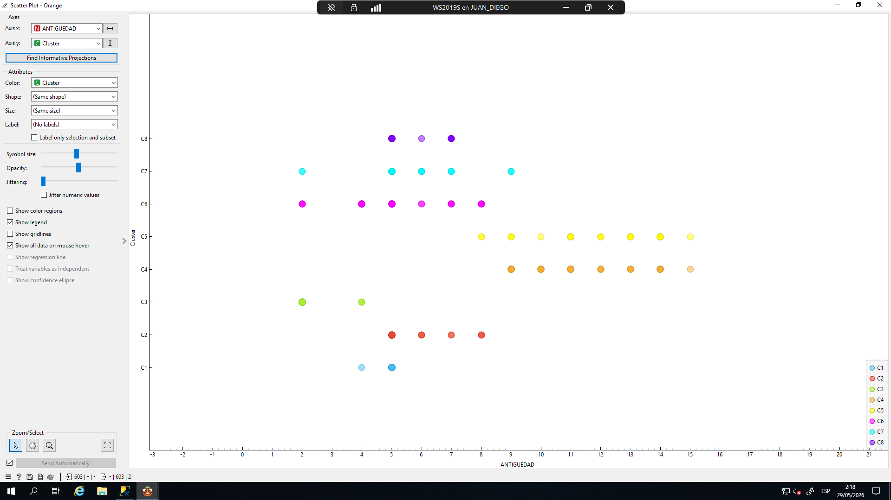

Data Warehouse y Minería de Datos
Solución de inteligencia de negocios sobre SQL Server para el análisis del parque tecnológico de una organización: 603 equipos con su historial de mantenimientos. El trabajo cubre el ciclo completo, desde la extracción de los datos operativos hasta el modelo predictivo que los explota.
Proceso ETL
La fuente son dos tablas operativas: EQUIPO y MANTENIMIENTO. El ETL las transforma en una tabla plana lista para el análisis, calculando cinco variables derivadas: la antigüedad de cada equipo con DATEDIFF sobre su fecha de compra, el conteo de mantenimientos preventivos y correctivos mediante subconsultas por tipo, la marca traída con un LEFT JOIN, y un indicador binario de si el equipo ha recibido mantenimiento.
Usé subconsultas en lugar de joins directos por una razón concreta: un join contra la tabla de mantenimientos duplicaría la fila de cada equipo tantas veces como mantenimientos tenga, y eso falsearía el análisis. Con subconsultas, cada equipo permanece como un único registro.
El resultado se encapsula en una vista reutilizable que aplica dos filtros del requerimiento: solo equipos activos, y excluyendo las placas presentes en un archivo plano importado. La comparación entre ambas tablas requirió COLLATE DATABASE_DEFAULT para alinear sus intercalaciones. La vista entrega exactamente 603 registros.


Modelo dimensional
Sobre los datos operativos construí un modelo estrella: una tabla de hechos central con las claves foráneas de cada medición, rodeada de 17 tablas de dimensión —marca, tipo de equipo, marca de procesador, tipo de mantenimiento, usuario, agente, tipo de ingreso, estado, y dimensiones de tiempo de año y mes, entre otras—.
Las dimensiones de tiempo se generan a partir de las fechas reales de mantenimiento con SELECT DISTINCT, de modo que el calendario del cubo refleja el periodo efectivo de los datos y no un rango arbitrario. Cada dimensión lleva su clave primaria con IDENTITY, y la tabla de hechos sus 16 claves foráneas correspondientes.
Minería de datos
Con el conjunto preparado apliqué dos técnicas en Orange, tomando la marca del equipo como variable objetivo.
El árbol de decisión reveló que la antigüedad es la variable con mayor poder predictivo: parte la raíz y deja un nodo casi puro en los equipos de dos años o menos, donde 198 de 202 son Lenovo (98%). La segunda variable en importancia resultó ser el mantenimiento preventivo. En la rama de mayor antigüedad la distribución se invierte y HP pasa a dominar con 164 equipos de 401.
La segmentación k-means se evaluó entre 2 y 8 grupos usando el índice de silueta como criterio. El clúster C1 resultó el más homogéneo, compuesto en su totalidad por equipos Dell, con una silueta media de 0,708. El gráfico de dispersión confirmó que el clúster C5 concentra los equipos de mayor antigüedad del parque.






